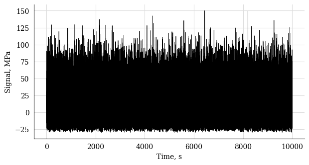
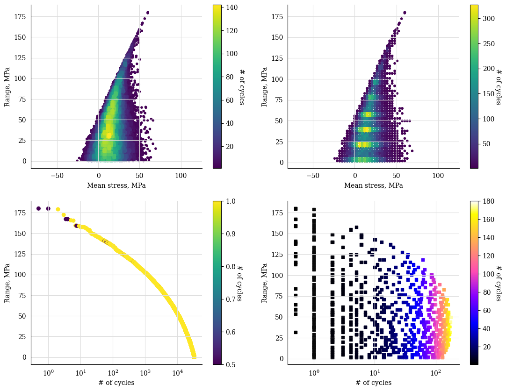

4. CycleCount definition
The CycleCount class incorporates the main information about a processed signal for fatigue analysis.
a. Constant fatigue load
Note
In this example we define a fatigue stress signal in the form of a sinusoidal function.
We then feed our signal to the ~CycleCount class.
Define the time and stress arrays
t = np.arange(0, 10.1, 0.1) # (in seconds)
s = 200 * np.sin(np.pi*t) + 100 # (in MPa)
plt.plot(t, s)
plt.xlabel("time, s")
plt.ylabel("stress, MPa")
plt.show()

Define the CycleCount instance
cc = pf.CycleCount.from_timeseries(s, t, name="Example")
cc
| Example | |
|---|---|
| Cycle counting object | |
| largest full stress range, MPa, | None |
| largest stress range, MPa | 400.0 |
| number of full cycles | 0 |
| number of residuals | 11 |
| number of small cycles | 0 |
| stress concentration factor | N/A |
| residuals resolved | False |
| mean stress-corrected | No |
- CycleCount from constant time series
fig, ax = plt.subplots(1,1, figsize=(4.5, 4))
cc.plot_histogram(fig=fig)

Showing the exported dictionary
cc.as_dict(legacy_expoprt=True)
Gives:
{
'nr_small_cycles': 0,
'range_bin_lower_bound': 0.2,
'range_bin_width': 0.05,
'hist': [],
'lg_c': [],
'res': [200.0, 400.0, 400.0, 400.0, 400.0, 400.0,
400.0, 400.0, 400.0, 400.0, 200.0],
'res_sig': [100.0, 300.0, -100.0, 300.0, -100.0, 300.0,
-100.0, 300.0, -100.0, 300.0, -100.0, 100.0]
}
b. Weibull-distributed signal
Note
In this example we define a Weibull-distributed fatigue stress signal.
~CycleCount class.
Define the time and stress arrays
import py_fatigue.testing as test
# Simulate a random signal
t = test.get_sampled_time(duration=10000, fs=10)
s = test.get_random_data(
t=t, min_=-30, range_=180, random_type="weibull", a=2., seed=42
)
# Plot the signal
plt.plot(t, s, 'k', lw=0.5)
plt.xlabel("Time, s")
plt.ylabel("Signal, MPa")
plt.show()

Define the CycleCount instance
# CycleCount definition
cycle_count = pf.CycleCount.from_timeseries(
time=t, data=s, mean_bin_width=3., range_bin_width=3.,
)
cycle_count
| Cycle counting object | Random signal | ||||||||
|---|---|---|---|---|---|---|---|---|---|
| largest full stress range, MPa | 179.026964 | ||||||||
| largest stress range, MPa | 180.0 | ||||||||
| number of full cycles | 33317 | ||||||||
| number of residuals | 23 | ||||||||
| number of small cycles | 0 | ||||||||
| stress concentration factor | N/A | ||||||||
| residuals resolved | False | ||||||||
| mean stress-corrected | No |
fig, ax = plt.subplots(1,1, figsize=(4.5, 4))
cc.plot_histogram(fig=fig)

Exporting the rainflow counted signal as a json dictionary, both in legacy (no mean stress) and new format.
# Exporting the cycle-count matrix in the legacy format, i.e. not
# accounting for mean stresses. This function has been kept for
# backwards compatibility.
exp_dict_legacy = cycle_count.as_dict(
max_consecutive_zeros=20, damage_tolerance_for_binning=0.2, legacy=True
)
print(exp_dict_legacy)
{"nr_small_cycles": 99, "range_bin_lower_bound": 0.2, "range_bin_width": 3.0,
"hist": [1346.0, 1485.0, 1433.0, 1397.0, 1455.0, 1493.0, 1479.0, 1471.0, 1348.0,
1432.0, 1361.0, 1234.0, 1236.0, 1203.0, 1146.0, 1103.0, 1072.0, 983.0,
957.0, 853.0, 808.0, 806.0, 679.0, 659.0, 570.0, 520.0, 449.0,
451.0, 397.0, 376.0, 289.0, 259.0, 236.0, 237.0, 164.0, 160.0,
120.0, 89.0, 85.0, 92.0, 60.0, 54.0, 39.0, 20.0, 24.0,
24.0, 17.0, 12.0, 10.0, 8.0, 2.0, 5.0, 6.0, 1.0,
0.0, 2.0, 0.0, 1.0, 0.0, 1.0], "lg_c": [],
"res": [ 64.9527, 76.1706, 83.8523, 112.9550, 115.8100, 123.7286, 125.4990,
137.6065, 138.7786, 139.5674, 140.8493, 159.0391, 159.1209, 167.0853,
167.1570, 180.0000, 179.8804, 122.3010, 115.1474, 58.9131, 53.7620,
31.8885],
"res_sig": [ 49.8674, -15.0853, 61.0853, -22.7670, 90.1880, -25.6220, 98.1066,
-27.3924, 110.2141, -28.5645, 111.0029, -29.8464, 129.1926, -29.9283,
137.157, -30.0000, 150.0000, -29.8804, 92.4207, -22.7267, 36.1864,
-17.5756, 14.3128, 14.2784]}
# Exporting the cycle-count matrix
exp_dict = cycle_count.as_dict(
max_consecutive_zeros=20, damage_tolerance_for_binning=1
)
print(exp_dict)
{"nr_small_cycles": 99, "range_bin_lower_bound": 0.2, "range_bin_width": 3.0,
"mean_bin_lower_bound": -25.5, "mean_bin_width": 3.0,
"hist": [[ 0.0, 1.0],
[ 1.0, 1.0],
[ 4.0, 5.0, 4.0, 1.0, 3.0],
[14.0, 17.0, 9.0, 10.0, 6.0, 4.0, 0.0, 2.0, 1.0],
[31.0, 31.0, 21.0, 20.0, 13.0, 10.0, 6.0, 7.0, 4.0, 5.0],
[33.0, 51.0, 24.0, 39.0, 31.0, 28.0, 22.0, 15.0, 13.0, 6.0, 2.0, 3.0,
1.0],
[56.0, 68.0, 63.0, 40.0, 45.0, 40.0, 36.0, 41.0, 19.0, 22.0, 18.0, 11.0,
7.0, 2.0, 1.0],
[74.0, 91.0, 78.0, 60.0, 78.0, 60.0, 75.0, 46.0, 44.0, 44.0, 40.0, 20.0,
19.0, 18.0, 4.0, 2.0],
...,
[ 0.0, 2.0, 0.0, 1.0, 0.0, 0.0, 0.0, 0.0, 1.0, 0.0, 0.0, 0.0,
1.0, 0.0, 0.0, 0.0, 1.0],
[ 0.0, 0.0, 0.0, 0.0, 0.0, 0.0, 1.0, 0.0, 0.0, 0.0, 0.0, 0.0,
0.0, 0.0, 0.0, 0.0, 1.0],
[0.0, 0.0, 0.0, 0.0, 1.0]],
"lg_c": [[ 52.7204, 157.4858], [ 52.7330, 165.3195], [ 53.0368, 165.7063],
[ 56.1889, 172.3578], [ 59.9228, 179.0270]],
"res": [[ 17.3910, 64.9527], [ 23.0000, 76.1706], [19.1591, 83.8523],
[ 33.7105, 112.9550], [ 32.2830, 115.8100], [36.2423, 123.7286],
[ 35.3571, 125.4990], [ 41.4109, 137.6065], [40.8248, 138.7786],
[ 41.2192, 139.5674], [ 40.5782, 140.8493], [49.6731, 159.0391],
[ 49.6322, 159.1209], [ 53.6143, 167.0853], [53.5785, 167.1570],
[ 60.0000, 180.0000], [ 60.0598, 179.8804], [31.2702, 122.3010],
[ 34.8470, 115.1474], [ 6.7298, 58.9131], [ 9.3054, 53.7620],
[ -1.6314, 31.8885]],
"res_sig": [ 49.8674, -15.0853, 61.0853, -22.7670, 90.1880, -25.6220, 98.1066,
-27.3924, 110.2141, -28.5645, 111.0029, -29.8464, 129.1926, -29.9283,
137.1570, -30.0000, 150.0000, -29.8804, 92.4207, -22.7267, 36.1864,
-17.5756, 14.3128, 14.2784]}
It is also possible defining the CycleCount instance from the exported CycleCount dictionary (json file).
# Reconstructing the CycleCount instance from the exported matrix
cycle_count_d = pf.CycleCount.from_rainflow(exp_dict, name="Random Signal")
cycle_count_d
| Cycle counting object | Random Signal | ||||||||
|---|---|---|---|---|---|---|---|---|---|
| largest full stress range, MPa | 179.027 | ||||||||
| largest stress range, MPa | 180.0 | ||||||||
| number of full cycles | 33219 | ||||||||
| number of residuals | 22 | ||||||||
| number of small cycles | 99 | ||||||||
| stress concentration factor | N/A | ||||||||
| residuals resolved | False | ||||||||
| mean stress-corrected | No |
A slightly more complicated plot to show the Markov matrix as well as the cumulative (or non-cumulative) rainflow matric both for [cc]{.title-ref} and `cc_dct`:
fig, axs = plt.subplots(2,2, figsize=(13, 10))
cc.plot_histogram(fig=fig, ax=axs[0][0], plot_type="mean-range")
cc_dct.plot_histogram(fig=fig, ax=axs[0][1], plot_type="mean-range")
cc.plot_histogram(fig=fig, ax=axs[1][0], plot_type="counts-range-cumsum", s=30)
cc_dct.plot_histogram(fig=fig, ax=axs[1][1], plot_type="counts-range",
marker='s', s=20,
cmap=plt.get_cmap("gnuplot2")) # chg cmap
axs[1][1].set_xscale("log")
axs[1][0].set_xscale("log")
plt.show()
